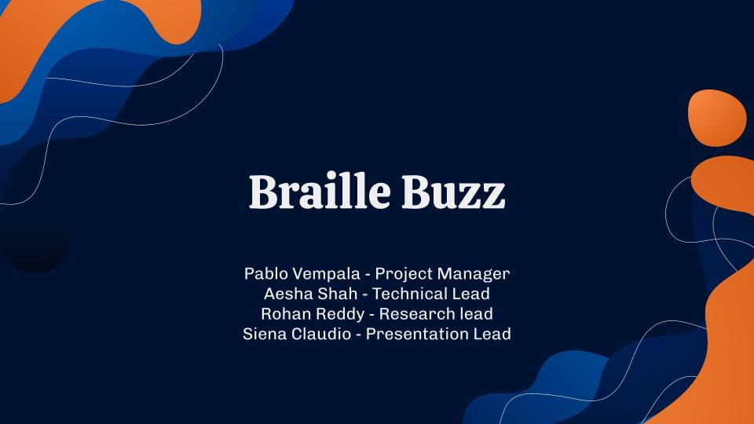
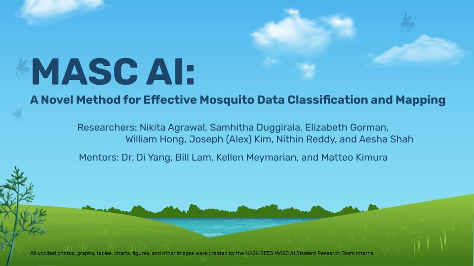
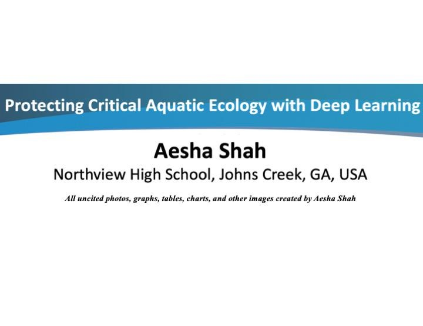
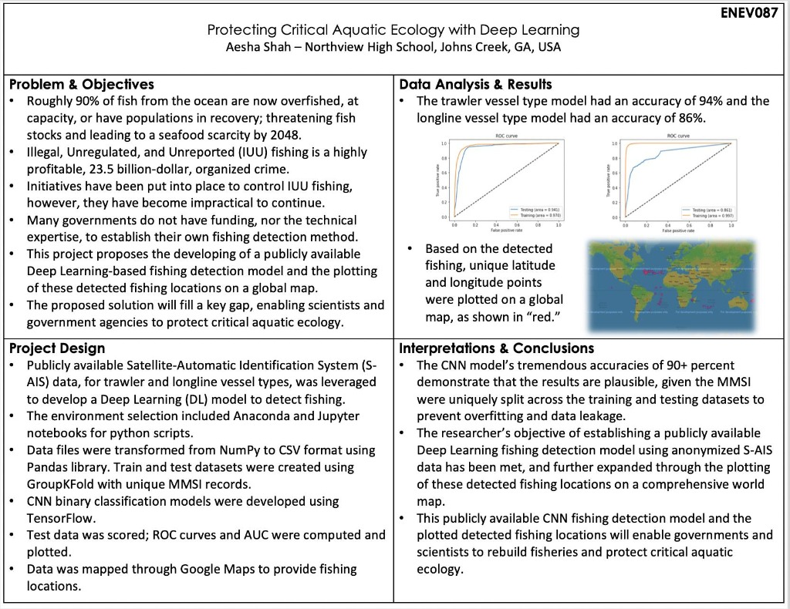

05 / PROJECTS & PAPERS
Projects & Papers
under construction
Projects
Breast Cancer Diagnosis using Machine Learning
- — Evaluated unsupervised clustering (K-Means) and supervised classification (Support Vector Machines and XGBoost) alongside PCA and SelectKBest dimensionality reduction on the UCI Diagnostic Wisconsin Breast Cancer dataset (569 FNA biopsy samples, 30 nuclear morphology features) to maximize malignant tumor recall and clinical interpretability.
- — Achieved 98.25% accuracy and 0.9950 ROC-AUC (98.61% malignant precision & recall) with SVM—retaining full baseline accuracy with 15 PCA components (98.7% variance)—and 95.61% accuracy (0.9931 ROC-AUC) with XGBoost across 5-fold and 50-run repeated stratified cross-validation.
Splay Trees: Self-Adjusting Binary Search Trees & Amortized Analysis
- — Analyzed self-adjusting binary search trees (splay trees) as a metadata-free alternative to rigid height-balanced structures (AVL and Red-Black trees), detailing Zig, Zig-Zig, and Zig-Zag splaying rotations alongside access, join, split, insert, and delete primitives.
- — Proved the Access Lemma and O((m + n) log(m + n)) Performance Theorem (O(log n) amortized time per operation) via Tarjan's potential method, deriving Static Optimality, Working-Set, and Dynamic Finger bounds alongside systems applications in file indexing, string editors, link/cut network flow trees, and memory allocation.
WanderSync: Collaborative Travel Management System
- — Engineered a collaborative Android travel management application in Java with Firebase Authentication and Realtime Database across four Agile sprints, supporting real-time group itinerary planning, destination and vacation-day tracking, dining and lodging reservations, MPAndroidChart logistics visualizations, and community travel sharing.
- — Designed a modular MVVM architecture incorporating Singleton database handlers, Observer LiveData state synchronization, and Strategy-based reservation sorting, modeled end-to-end with Use Case, Domain, Design Class, and Sequence UML diagrams.
Braille Buzz

01 / 10- — Served as Technical Lead developing an Android accessibility application (prototyped in Figma and built in Java) that captures or imports photos of raised Braille cells and translates them into written and spoken English.
- — Trained a Convolutional Neural Network (CNN) in PyTorch across varied lighting, zoom, and angle conditions to classify Braille imagery over an HTTP inference server integrated with Google's Text-to-Speech (TTS) Python API for real-time audio playback.
MASC AI: A Novel Method for Effective Mosquito Data Classification and Mapping

01 / 12- — Developed MASC AI (Mosquito lArvae Siphon Classification AI), a supervised logistic regression model in Python (NumPy, OpenCV, scikit-image) trained on 3,275 verified GLOBE Observer citizen-science larva images across five continents to automate Anopheles malaria-vector identification—where over 90% of unverified crowdsourced labels were inaccurate or missing—achieving 88.24% training and 86.11% test accuracy.
- — Engineered a geospatial mapping pipeline in Python (Pandas, gmplot) alongside NASA Earth observation tools (GLOBE ADAT, Collect Earth Online, AppEARS, NASA Worldview, Google Earth Engine, ArcGIS Online) to plot global and regional Anopheles, Aedes, and Culex vector distributions and inform public health policy; presented as first author at the AGU Fall Meeting 2022.
Protecting Critical Aquatic Ecology using Deep Learning
- — Developed publicly available Convolutional Neural Network (CNN) binary classification models in Python and TensorFlow to automate commercial and Illegal, Unreported, and Unregulated (IUU) fishing detection from anonymized Satellite-Automatic Identification System (S-AIS) vessel telemetry, eliminating manual processing and proprietary software barriers.
- — Pre-processed trawler and longline S-AIS datasets with Pandas and MMSI-grouped cross-validation (GroupKFold) to prevent vessel-level data leakage, achieving 94% accuracy (0.941 ROC-AUC) on trawlers and 86% accuracy (0.861 ROC-AUC) on longlines and plotting detected fishing coordinates onto a global map for conservation and fishery management.

01 / 12
Papers
Privacy Impact Assessment for Flock Safety
Independent Privacy Impact Assessment of residential HOA Flock Safety automated license plate recognition (ALPR) deployments—mapping cloud data flows and trust boundaries while evaluating re-identification, aggregation, dark patterns, and governance safeguards.
Perspectives on State Data Breach Laws
Three-part bipartisan task force brief evaluating how to modernize Georgia’s 2007 data breach notification law—contrasting Oklahoma’s risk-of-harm and safe-harbor model against California’s strict disclosure mandate and proposing a hybrid statute balancing consumer protection, economic growth, and cybersecurity incentives.
Policy on Cyberwar in Aerospace Critical Infrastructure
Think-tank policy report written for the Mitchell Institute for Aerospace Studies analyzing offensive cyber operations and countermeasures in the Ukraine and Iran conflicts—proposing U.S. aerospace cyber policy across peacetime, staging, and wartime centered on supply-chain resilience, redundant communications, and preemptive cyber shaping.
Technology Acquisition Strategy Paper
Original M&A strategy and legal due-diligence analysis proposing Atlassian’s acquisition of Miro to unify visual whiteboarding with Jira, Confluence, and Bitbucket—evaluating product ecosystem integration, IP and open-source licensing, data privacy compliance, and financial risk.
The Ethical Implications of Facial Recognition Technology in Society
Analysis of Health Information Privacy Reform Act
Three-part legislative brief evaluating S.3097 (HIPRA)—arguing both for and against extending federal health-data privacy and minimum-necessary standards beyond HIPAA to apps and data brokers, concluding with targeted policy recommendations.
Georgia Tech Institutional Data Governance & Privacy Review
Independent policy audit of Georgia Tech’s Data Governance, Security Camera Use, and Privacy policies against campus surveillance systems—delivering governance gap recommendations, a draft GTPD surveillance privacy policy, and an executive memo to the Chief Privacy Officer.
Advancing Incident Response with AI at Cloudflare
CISO advisory report and CEO/board executive briefing evaluating how to scale AI across Cloudflare’s detection, triage, and incident response workflows—balancing rapid security automation with human-in-the-loop guardrails, secure ML pipeline governance, and U.S. regulatory compliance.
A Comparison of Debugging Features & Code Analysis
Independent technical expert simulation assessing software IP infringement risk between JetBrains’ IntelliJ IDEA and Eclipse IDE—comparing debugger user interfaces, architectures, breakpoint and stepping algorithms, APIs, and Java source code against landmark software copyright and patent case law.